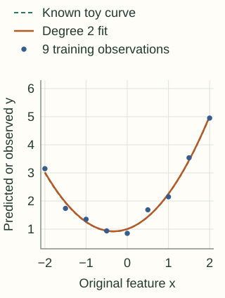

Polynomial Features
Polynomial features let a model learn curves by giving it extra columns. If the original measurement is $x$, a quadratic expansion gives the model both $x$ and $x^2$. The model learns how much to use each column. You do not have to know the curve's coefficients before fitting.
You only need the idea of a linear regression: multiply each feature by a learned weight, then add an intercept. Read the first two sections for the main idea; the later experiment explains when extra flexibility stops helping.
How can a linear model produce a curve?
Imagine a response that falls and then rises as a setting changes. A straight line can only keep rising, keep falling or stay flat. Adding a squared feature gives the model a way to represent that bend.
Write $\hat y$ for the prediction. With the original feature alone the model uses $\hat y=b+w_1x$. After adding $x^2$, it can use:
The intercept $b$ and weights $w_1,w_2$ are fitted from the training data. The expression is curved as a function of $x$, but it is still linear in the learned weights: each weight multiplies one already-computed column. Ordinary linear-regression tools can therefore fit it.
Keep the original feature as well as its square. Squaring alone maps both −2 and +2 to 4, losing their distinction. A column containing $x$ allows the model to distinguish them when the data supports it.
With several inputs, include products too
Degree means the total number of feature factors in a term. For two inputs $a$ and $b$, a complete degree-two expansion contains the original features, their squares and their product. For the row $(a,b)=(2,3)$:
| Term | Value | What it makes available |
|---|---|---|
| a, b | 2, 3 | Separate effects of the inputs |
| a², b² | 4, 9 | Curvature in either input |
| ab | 6 | The effect of one input can depend on the other |
A degree-two expansion includes terms of degree one and two. It does not include $a^2b$, whose total degree is three. Setting interaction_only=True excludes repeated factors such as $a^2$; it still retains the original inputs. Use get_feature_names_out() to inspect the columns you actually created.
Use one intercept convention. The examples here set include_bias=False and let the regression model fit its intercept. Adding a column of ones and also asking the model for an intercept duplicates the same constant direction.
More flexibility can fit noise
The experiment uses nine evenly spaced inputs from −2 to 2. We generate their responses from the known toy curve $1+0.5x+0.75x^2$, then add small, fixed perturbations. The curve is known only because we constructed this example; real datasets do not provide it.
Compare degree 1, degree 2 and degree 8, fitting each to the same nine observations. The dashed line shows the generating curve. All three plots use the same axes.

RMSE is the square root of the average squared prediction error; lower is better. The “known curve” column evaluates 401 evenly spaced inputs from −2 to 2 against the noiseless curve. It is an illustrative reference comparison, not a cross-validation estimate on real labels.
| Degree | Training RMSE | Known-curve RMSE | Prediction at x = 3 |
|---|---|---|---|
| 1 | 1.111 | 0.935 | 3.756 |
| 2 | 0.141 | 0.011 | 9.283 |
| 8 | 0.000 | 0.348 | -440.650 |
At $x=3$, the generating curve equals 9.25. Degree 8 predicts −440.65 even though its training error is essentially zero. Extrapolation is a separate concern: a curve that matches observations inside the training range can behave very differently outside it. The degree-two fit happens to extrapolate well here because the generating relationship is quadratic; that is not a general guarantee.
Count columns before expanding a dataset
With $p$ input features, degree two adds $p$ squares and $p(p-1)/2$ distinct pairwise products. Including the original $p$ columns gives $p+p(p+1)/2$ columns, excluding the constant.
For 100 inputs that is 5,150 columns. At 10,000 rows, a dense array of 64-bit values needs about 412 MB just for those values. Temporary arrays, the fitted model and copies need additional memory.
Optional: the count for any maximum degree
If every monomial up to degree $d$ is included, the number of columns is $\binom{p+d}{d}$ including the constant, or one fewer without it. This counts distinct products; exchanging the order of factors does not create a new feature. For 100 inputs and degree 3, the result without the constant is 176,850. Select a small relevant feature subset before considering a broad high-degree expansion.
Fit the complete transformation inside training
The polynomial map itself has no means or quantiles to estimate: once the input schema and degree are fixed, its products are fixed. But the choice of degree, any scaling and the model weights must respect the training/validation boundary. Put them in a pipeline so every validation fold receives a transformation fitted on its own training portion.
Powers can have very different scales. A feature near 100 produces a square near 10,000. Standardizing the expanded columns can improve numerical behavior and makes an equal penalty on coefficients more meaningful. Ridge regression adds such a penalty, discouraging large fitted weights. Tune both the degree and penalty using validation; a penalty does not make arbitrarily high degrees safe.
For very large inputs, rescaling before expansion may be necessary to prevent overflow. That scaler must also be fitted inside training. Centering changes coefficient interpretation, so keep the transformation with the model and interpret effects through it.
Python: reproduce the experiment and build a regularized pipeline
import numpy as np
from sklearn.pipeline import make_pipeline
from sklearn.preprocessing import PolynomialFeatures, StandardScaler
from sklearn.linear_model import LinearRegression, Ridge
x = np.linspace(-2, 2, 9).reshape(-1, 1)
noise = np.array([.15, -.2, .1, 0, -.15, .25, -.1, .1, -.05])
y = 1 + .5*x[:, 0] + .75*x[:, 0]**2 + noise
grid = np.linspace(-2, 2, 401).reshape(-1, 1)
reference = 1 + .5*grid[:, 0] + .75*grid[:, 0]**2
for degree in (1, 2, 8):
model = make_pipeline(
PolynomialFeatures(degree, include_bias=False),
LinearRegression(),
).fit(x, y)
train_rmse = np.sqrt(np.mean((model.predict(x) - y)**2))
reference_rmse = np.sqrt(np.mean((model.predict(grid) - reference)**2))
print(degree, round(train_rmse, 3), round(reference_rmse, 3))
# A regularized alternative; degree and alpha still need validation.
regularized = make_pipeline(
PolynomialFeatures(2, include_bias=False),
StandardScaler(),
Ridge(alpha=1.0),
).fit(x, y)
print(regularized.named_steps['polynomialfeatures'].get_feature_names_out(['x']))
The degree comparison deliberately uses unregularized least squares to isolate the effect of flexibility. The second pipeline demonstrates where scaling and ridge belong; its degree and penalty are illustrative choices, not a validated recommendation.
Construct the degree-two row yourself
Copy the original inputs, then append each product once. Starting the inner loop at the outer index includes squares and avoids producing both $ab$ and $ba$. The following function handles finite inputs and rejects overflowing products; it constructs features, leaving regression fitting to a separate solver.
C++17: degree-two expansion without a constant column
#include <cmath>
#include <iostream>
#include <stdexcept>
#include <vector>
// Degree <= 2, without a constant column.
std::vector<double> quadratic_features(const std::vector<double>& x) {
if (x.empty()) throw std::invalid_argument("empty input");
for (double v : x)
if (!std::isfinite(v)) throw std::invalid_argument("nonfinite input");
std::vector<double> result = x;
for (std::size_t i = 0; i < x.size(); ++i) {
for (std::size_t j = i; j < x.size(); ++j) {
double product = x[i] * x[j];
if (!std::isfinite(product)) throw std::overflow_error("product overflow");
result.push_back(product);
}
}
return result;
}
int main() {
for (double v : quadratic_features({2.0, 3.0})) std::cout << v << ' ';
std::cout << '\n'; // 2 3 4 6 9
}
Use low-degree polynomial terms when smooth curvature or a few products match the problem and improve held-out performance. If you need local flexibility without a single global high-degree polynomial, consider spline features. If the model already learns nonlinear splits, such as a tree, evaluate whether the expansion adds useful information before accepting its memory cost.
References and further reading
- Scikit-learn: PolynomialFeatures — term ordering, degree, interaction-only expansion and intercept controls.
- Scikit-learn: underfitting and overfitting — a separate experiment relating polynomial degree to generalization.
- Scikit-learn: Ridge — the penalized regression objective and solver behavior.
- Scikit-learn: common pitfalls — keeping fitted preprocessing inside training and validation folds.